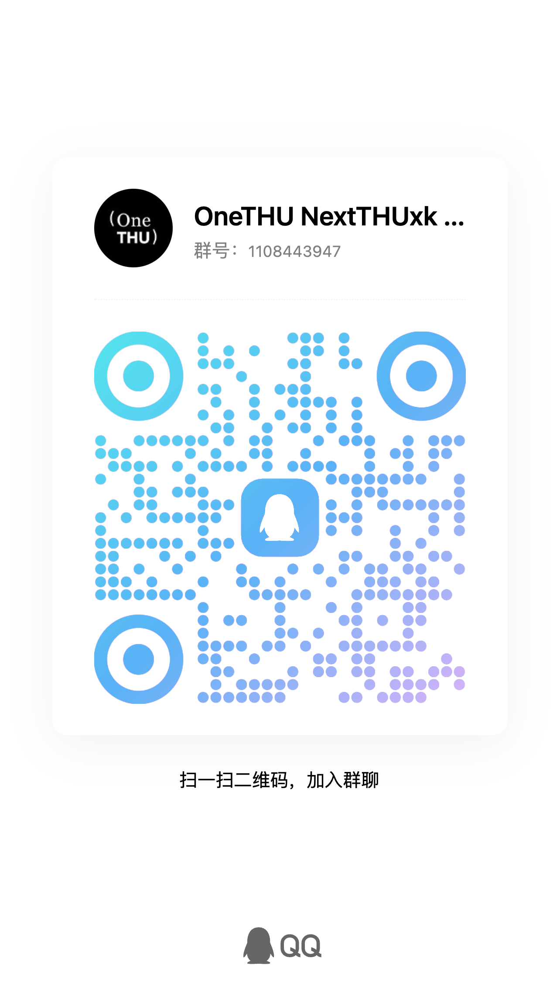

Report an issue
Share your app version, OS, experience mode, steps to reproduce, and redacted logs—and keep passwords, tokens, QR codes, and personal course details private.
Read moreCOMMUNITY
Clear steps help every fix land faster.
Share your app version, OS, experience mode, steps to reproduce, and redacted logs—and keep passwords, tokens, QR codes, and personal course details private.
Read moreTell us about your campus workflow, what would make it smoother, and what you wish OneTHU could do next.
Read moreOriginal code uses the custom OneTHU Noncommercial License—covering noncommercial use, campus fair-use rules, and source attribution on public reuse.
Read moreScan with QQ to join the user group for tips, discussion, and feedback—and drop a note on GitHub Issues if the QR code ever expires.
